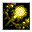
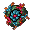

酸の爆裂球 Acid Ball
英語版 CrawlWiki の記事「Acid Ball」(0.34 向け、2026-05-23 版)の翻訳です。原文の著者は編集履歴をご覧ください。
|  酸の爆裂球 | |
|---|---|
| 詠唱の騒音 | 5 |
| 呪文の騒音 | 0 |
| 射程 | 5 |
| フラグ | 方向・対象指定(Dir or target)、モンスター専用(Monster)、射線の確認が必要(Needs tracer) |

| 腐食性の酸の爆裂球を投げつける。 |
酸の爆裂球はモンスター専用の呪文だ。ファイアボールと同じく3x3の爆発を起こすが、ダメージは酸によるものになる。
酸の爆裂球を唱える敵は次のとおり。
- J

生まれたての変形体(ダメージ3d10) - *
 エントロピーの球体(ダメージ3d38)
エントロピーの球体(ダメージ3d38)